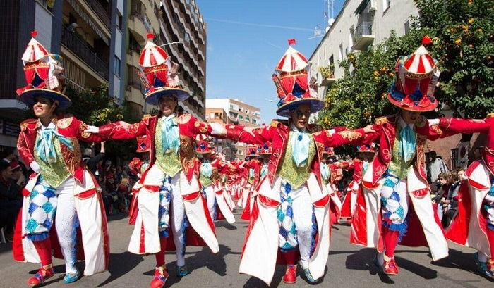

Contenido Multimedia
A continuación, puedes disfrutar de fotografías y vídeos que muestran la belleza de Badajoz y su entorno:
- 
Nuestras calles
La alcazaba
El carnaval de Badajoz
A continuación, puedes disfrutar de fotografías y vídeos que muestran la belleza de Badajoz y su entorno:
Nuestras calles
La alcazaba
El carnaval de Badajoz